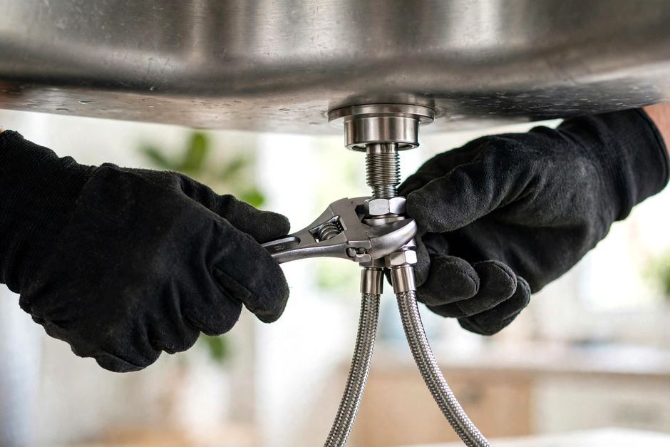

General Repair Hub
Plumbing Repair in Belleville, IL
General plumbing repair covers the everyday faults that appear across a home, from drips and leaks to clogs, running fixtures, and pressure changes. This hub page explains how faults are assessed and points to detailed service pages for specific systems. Hinkle Plumbing Company handles repair assessment in Belleville, IL, starting with leak repair findings where water damage risk is present.
1610 W Main St, Belleville, IL 62220Monday through Friday, 8:00 AM to 4:30 PM(618) 677-6556
What This Hub Covers
General Repair Types Covered
General repair covers faults across supply piping, drain piping, fixtures, and shutoffs in Belleville homes. Each type below is assessed on its own pattern, and detailed pages explain system-specific work where the fault extends beyond general repair.
Leak Repair Overview
Leak repair covers supply leaks, drain leaks, and fixture leaks found through damp patterns, meter observations, and visible piping review. Leak source findings shape repair scope, and shutoff control supports a sequenced response.
Drip and Fixture Repair
Drip repair covers faucets, toilets, shower valves, and supply connections that drip between uses. Cartridge, seal, and valve findings shape repair scope, and fixture condition guides repair against replacement discussion.
Clog and Slow Drain Repair
Clog repair covers localized blockages and slow drainage patterns across fixtures. Fixture patterns help separate trap faults from branch or main-line concerns, and camera findings shape method selection where needed.
Pressure Concern Review
Pressure concerns are reviewed through fixture patterns, shutoff condition, and piping context. Low pressure at one fixture and low pressure across fixtures point to different causes, and findings shape the repair path.
Noise and Vibration Review
Pipe noise and vibration are reviewed through shutoff behavior, pressure context, and pipe support findings. Noise patterns during fixture use help narrow the cause, and support and valve findings shape the response.
About Hinkle Plumbing Company
General Repair From a Belleville Base
General plumbing repair assessment from Hinkle Plumbing Company starts at its Belleville office and covers homes across the city. Fault patterns are reviewed across fixtures and systems, and scope is discussed before work begins.
Belleville housing includes a large share of homes from earlier building eras, and in those homes, expect galvanized supply piping, cast-iron drains, and clay laterals, with joint and corrosion findings shaping repair scope. General repair assessment separates single-fixture faults from system-wide patterns, so repair effort matches the cause. Hinkle Plumbing Company reviews findings across the home, and drain cleaning findings help where clog patterns extend beyond one trap.

How we workImage showing general plumbing repair work under a sink in a Belleville home.
How Assessment Works
General Repair Assessment Steps
The steps flex with the condition of the job, but the sequence stays the same.
Describe the Fault Pattern
Fault timing, affected fixtures, and prior repair attempts are discussed to narrow the system involved. Pattern details help separate single-fixture faults from supply, drain, or pressure concerns affecting several fixtures.
Control Water Where Needed
Shutoff control is reviewed before repair work, particularly where active leaks are present. Shutoff findings shape sequencing, and isolation options are discussed where fixture-level shutoffs are seized or absent.
Inspect Visible Piping
Visible supply and drain piping, connections, and shutoffs are inspected for condition and leak signs. Findings are noted by system, because general repair concerns often span more than one part of the home.
Plan by Fault Type
Each fault is planned on its own findings, with leak, drain, fixture, and pressure scopes kept distinct. Detailed service pages explain system-specific work, and the overall plan reflects combined findings for the home.
Check After Repair
After repair, fixture operation, drain flow, and leak behavior are checked where relevant. Findings are discussed, and maintenance observations are shared so repaired systems are understood as ongoing parts of the home.
Repair Approaches
General Repair Methods
General repair methods reflect fault type, pipe material, and access conditions in the home. Options below are discussed during assessment, and suitability is confirmed for the specific fault rather than assumed.
Joint and Connection Repair
Joint and connection repair addresses leaks at threaded, soldered, and compression joints in supply and drain piping. Joint condition and material findings shape repair scope, and access constraints are reviewed during planning.
Section Replacement
Section replacement renews a limited run of piping where corrosion, damage, or joint failure is concentrated. Remaining piping is assessed, because section work does not resolve widespread material concerns elsewhere.
Fixture Part Replacement
Fixture part replacement addresses cartridges, seals, flappers, and fill valves that wear with use. Part condition findings shape repair scope, and parts are matched to the fixture type during planning.
Trap and Drain Clearing
Trap and drain clearing addresses localized blockages at sinks, tubs, and showers. Clearing method reflects blockage material and trap findings, and camera review is discussed where patterns suggest deeper concerns.
Shutoff Replacement
Shutoff replacement restores water control where valves seize or leak. Shutoff findings shape sequencing for other repairs, and replacement is planned with isolation and access in mind.
Sealing and Support Work
Sealing work addresses fixture base and connection leaks, while support work addresses loose piping that moves during use. Sealing and support findings are reviewed together, because movement can disturb seals over time.
Common Patterns
Common General Repair Patterns
General repair calls often describe a single symptom that points to a broader pattern once fixtures are compared. The patterns below describe common reasons for assessment, without describing a specific property or job.

Drips at Several Fixtures
A common call describes drips at more than one fixture, with cartridge and seal wear suspected across the home. Assessment compares drip patterns, handle behavior, and shutoff condition to separate isolated wear from supply or pressure context. Repair scope reflects the combined findings, and fixture condition guides repair against replacement discussion for each fixture. Combined findings shape the plan, and household observations are included in the discussion.
Slow Drains in One Bathroom
A common call describes slow drains across the fixtures in one bathroom, with no other part of the home affected. Assessment reviews trap condition, branch drain behavior, and venting context to narrow the cause. Clearing method reflects blockage findings, and camera review is discussed where patterns suggest concerns deeper in the branch line. The pattern is reviewed with related systems, and findings are discussed before work begins.
Signs to Note
General Repair Signs That Call for Assessment
Most calls fall into a few patterns. Knowing which pattern applies decides what the visit involves.
Damp Cabinets or Walls
Damp cabinets or walls can signal supply or drain leaks hidden from view. Damp patterns and visible piping findings are reviewed to narrow the source before repair scope is set.
Persistent Fixture Drips
Persistent drips waste water and signal cartridge, seal, or valve wear. Drip patterns across fixtures help separate isolated wear from broader supply context affecting several fixtures. Findings shape the assessment response.
Changing Water Pressure
Pressure changes across fixtures can reflect shutoff, piping, or supply findings. Pressure patterns are compared across fixtures, and shutoff condition is checked as part of the assessment. Observations shape the repair discussion.
Drain Odor in Living Spaces
Drain odor can reflect dry traps, venting concerns, or drain faults. Odor patterns across drains help narrow the cause, and trap and drain findings shape the response. Findings are reviewed during assessment.
Scope Factors
What Shapes General Repair Scope
Fault count, access, and pipe condition shape general repair scope.
Fault Count and Spread
Single-fixture faults and multi-fixture patterns carry different scope, and spread findings shape the plan. Pattern findings are discussed by phone, and detailed system pages explain work where faults extend further.
Access and Piping Condition
Wall, ceiling, and cabinet access plus pipe material and corrosion findings affect repair effort. Access findings are reviewed during assessment, and restoration needs are discussed where openings are required. Assessment findings shape the plan.
Parts and Fixture Condition
Parts availability context, fixture age, and shutoff condition affect repair against replacement choices. Condition findings are included in the discussion, and readers are invited to call to discuss scope for a specific home.
Reviews from Google
What Customers Say on Google
★★★★★
“Very prompt and responsive, the worker was friendly and informative! Will use this company again!”
★★★★★
“Don did an outstanding job for me when I needed him and highly recommend his business”
★★★★★
“Rated 5.0 out of 5 across 3 Google reviews, all five stars.”

What counts as general plumbing repair?
General repair covers leaks, drips, clogs, running fixtures, pressure changes, pipe noise, and shutoff faults across a home. System-specific work such as sewer repair, repiping, and water heater replacement is explained on detailed pages linked from this hub. Household observations are included in the discussion, and findings shape the response.
How are single-fixture and system-wide faults separated?
Assessment compares symptoms across fixtures, reviews visible piping and shutoff condition, and checks drain and pressure patterns. Single-fixture patterns point to fixture parts, while multi-fixture patterns point to supply, drain, or pressure concerns affecting the home. Assessment findings are discussed plainly, and related observations are reviewed together.
What should be noted before calling about a leak?
Note damp locations, affected fixtures, shutoff operation, and whether water flow changes with fixture use. Pattern details help narrow the source during assessment, and shutoff control is reviewed before repair work is planned. Findings are reviewed together, and household observations are included in the discussion.
What affects the scope of general plumbing repair?
Fault count, spread across fixtures, access constraints, pipe material and condition, and shutoff operation shape the scope. Each factor is reviewed during assessment, and readers are invited to call (618) 677-6556 to discuss scope for a specific home. Findings are discussed by phone before work is scheduled.
Related services
Other Plumbing Services We Handle

Leak Repair in Belleville, IL
Leak repair covers supply and drain leaks found through damp patterns and visible piping review in Belleville homes.
Drain Cleaning in Belleville, IL
Drain cleaning covers clearing for localized clogs and slow drains, with camera findings shaping method choice.
Water Heater Repair in Belleville, IL
Water heater repair covers no-hot-water concerns, leaks, and heater faults, kept distinct from replacement planning.Mon–Fri 8:00 AM–4:30 PM
Discuss Plumbing Repair in Belleville
Call (618) 677-6556 during Monday through Friday, 8:00 AM to 4:30 PM to discuss plumbing repair in Belleville. Closed Saturday and Sunday. Fault patterns across fixtures are reviewed during assessment.

Talk with the local team
Request Plumbing Repairs
Call (618) 677-6556 during office hours, Monday through Friday, 8:00 AM to 4:30 PM. Tell us what is happening and we will talk through the next step.